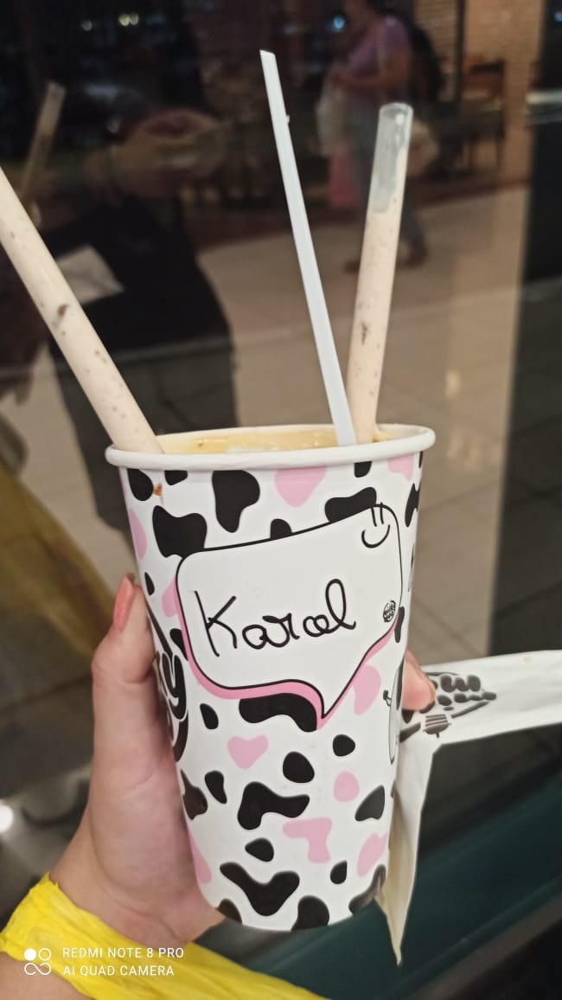
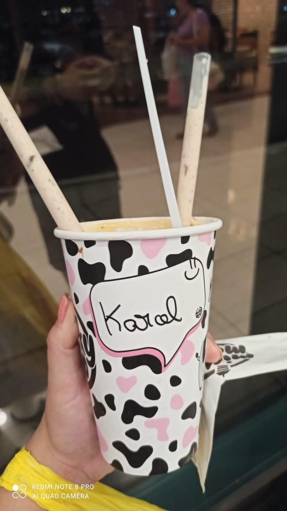

Querida Rabuchas, Neste momento mágico de Natal, quero expressar minha imensa gratidão por ter você em minha vida. À medida que o ano vai chegando ao fim, fica impossível não refletir sobre os momentos maravilhosos que compartilhamos. Agradeço sinceramente por cada risada, por cada abraço reconfortante e por todas as experiências que tornaram este ano tão especial. As memórias que construímos juntos são tesouros que guardarei para sempre em meu coração. Neste Natal, desejo a você alegria, paz e amor. Que os próximos dias sejam repletos de calor humano, boas energias e momentos de felicidade junto à pessoas importantes para você. Que a magia do Natal envolva você com carinho e renove nossas esperanças para o futuro. Feliz Natal, querida Rabicó. Que esta época festiva traga consigo a magia dos nossos melhores momentos e a promessa de um ano novo repleto de realizações. Com carinho, polipoli


 
